技巧記號
四線譜上有哪些常見的技巧記號呢
1. 搥弦 (Hammer-on)
記號是 H
用左手指快速擊弦所發出的聲音
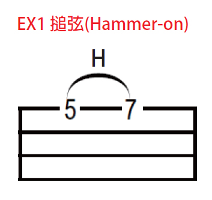
- 左手食指按第一弦第五格
- 右手彈第一弦
- 左手無名指快速搥第一弦第七格 (發出第一弦第七格的音)
2. 勾弦 (Pull-off)
記號是 P
用左手指快速勾弦所發出的聲音
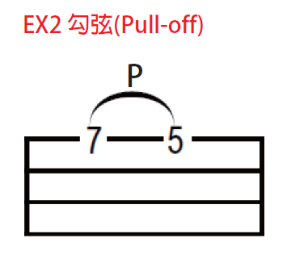
- 左手食指按第一弦第五格，無名指按第一弦第七格
- 右手彈第一弦
- 左手無名指勾第一弦 (發出第一弦第五格的音)
3. 滑弦 (Slide)
記號是 S
用左手壓弦後快速的橫向滑動
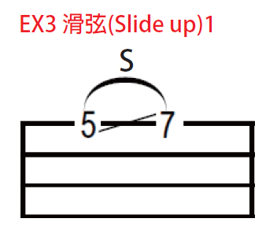
第一個: 從低的音滑到高的音
- 左手按第一弦第五格
- 右手彈第一弦
- 左手快速滑動到第一弦第七格 (發出第一弦第五格到第七格的連音)
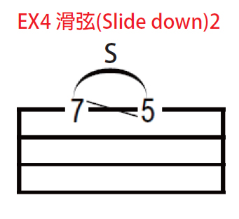
第二個: 從高的音滑到低的音
- 左手按第一弦第七格
- 右手彈第一弦
- 左手快速滑動到第一弦第五格 (發出第一弦第七格到第五格的連音)
4. 推弦與鬆弦 (Bend & Release)
推弦記號是 B
用左手把弦往上推使音變高
鬆弦記號是 R
把推好的弦放鬆讓音變回來
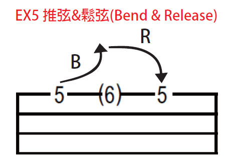
- 左手按第一弦第五格
- 右手彈第一弦
- 左手快速把弦往上推，讓音變成第一弦第六格
- 左手快速把弦放鬆，讓音變回第一弦第五格 (左手依舊按著第一弦第五格)
5. 切音 (Staccato)
記號是箭頭加上一個實心圓點
撥完弦之後用手把音切掉
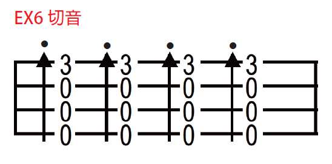
- 左手按第一弦第三格
- 右手往下刷
- 右手快速碰弦讓聲音消失 (恰恰聲)
6. 悶音 (Mute)
記號是箭頭加上一個空心圓點
先把音悶住在撥弦
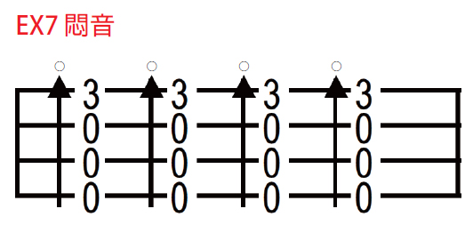
- 左手按第一弦第三格
- 右手輕壓住弦
- 右手往下刷 (比切音低沉的聲音)
7. 琶音 (Arpeggio)
記號是一個波浪箭頭
用右手依序慢慢的撥過四條弦
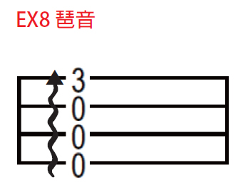
- 左手按第一弦第三格
- 右手從第四弦慢慢撥到第一弦
反覆記號
1. 左右蓋子 <img src="./repeat_sign_1.jpg"" width=“50px”/>
當看到它時
就要重複蓋子裡的所有小節
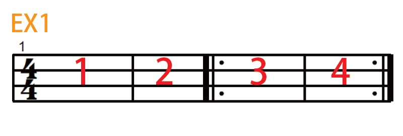
答案是: 1 2 3 4 3 4
2. 上面蓋子 <img src="./repeat_sign_2.jpg"" width=“130px”/>
第一次彈奏，彈 1 裡面的
第二次彈 2 裡面的
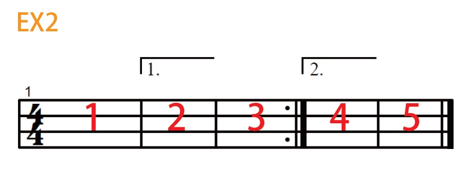
答案是: 1 2 3 1 4 5
3. Da Capo <img src="./da_capo.jpg"" width=“100px”/>
當在小節上方看到 Da Capo
或在小節下方看到 (D.C.)
代表要從頭彈起
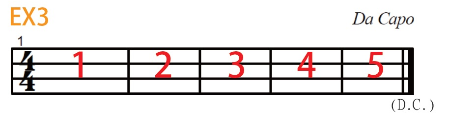
答案是: 1 2 3 4 5 1 2 3 4 5
4. Da Segno <img src="./da_segno.jpg"" width=“120px”/>
當在小節上方看到 Da Segno
或在小節下方看到 (D.S.)
代表從前面的 <img src="./segno_teken.jpg"" width=“20px”/> 彈起
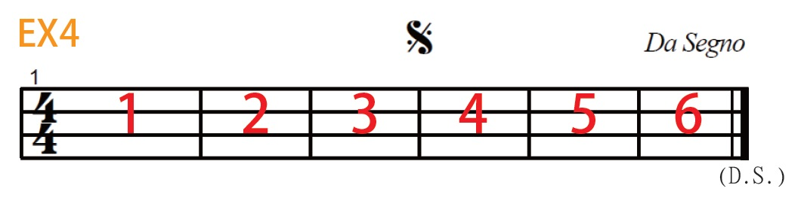
答案是: 1 2 3 4 5 6 4 5 6
5. Coda <img src="./coda.jpg"" width=“80px”/>
通常譜重複到第二遍時，烏龜才會出現
所以當看到它時，就跳到下一個烏龜處彈起
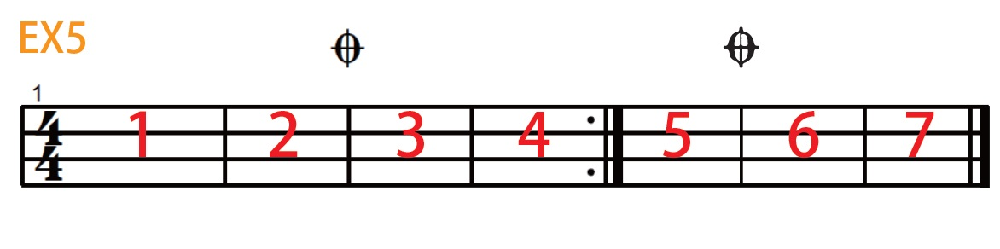
答案是: 1 2 3 4 1 2 6 7